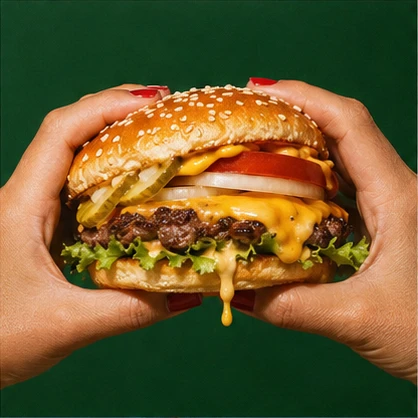

A primeira chapa
Quando a primeira chapa chegou, a cozinha só tinha espaço para uma pessoa de cada vez. Enquanto um tostava o pão, o outro esperava no balcão com o queijo na mão. Foi dessa cozinha apertada que saiu o Clássico da Brasa.
O pedido que ficou
O molho ia no pão de baixo e o tomate entrava por último, cortado grosso para chegar fresco à mesa. O Clássico ainda é montado nessa ordem.
Se é sua primeira visita, comece por ele. Custa R$ 29.
Ver o Clássico no cardápio